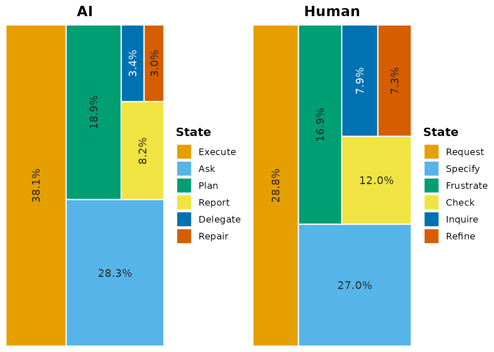
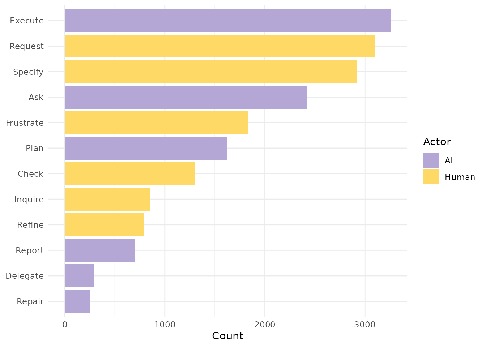
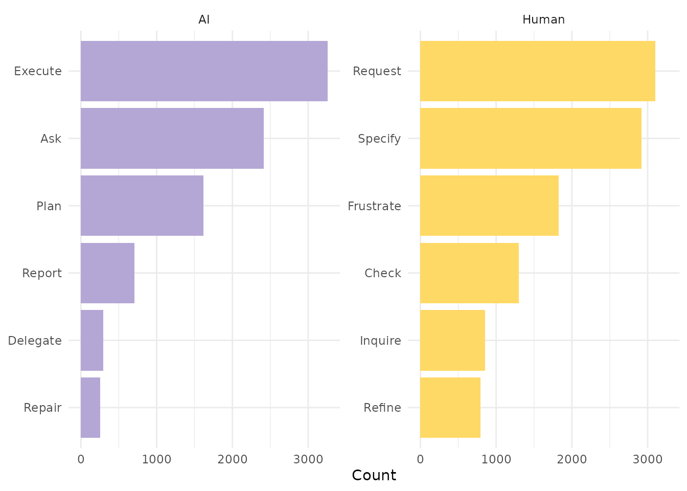
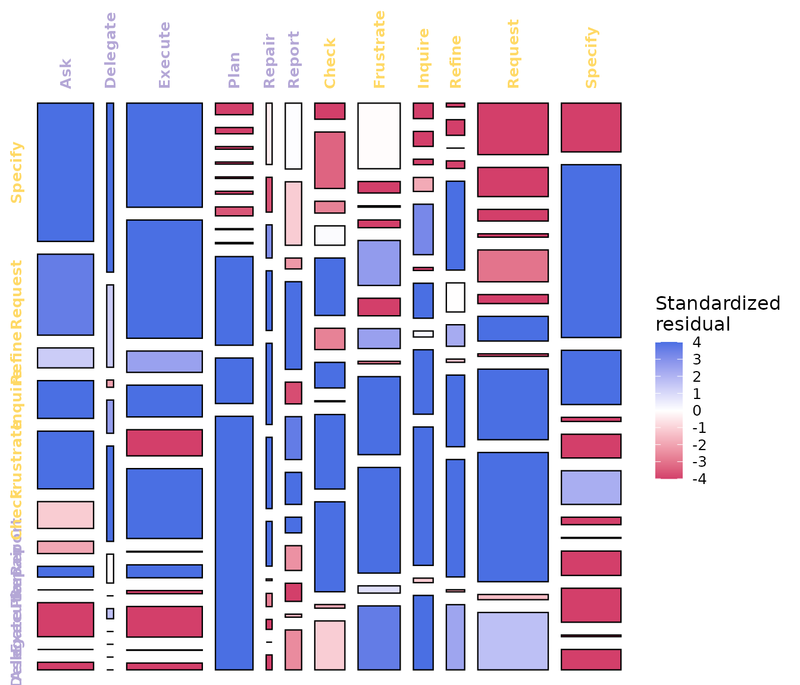

Frequencies and mosaic plots
Written by Mohammed Saqr and Sonsoles López-Pernas
Source:vignettes/articles/frequencies-and-mosaic.Rmd
frequencies-and-mosaic.RmdA transition network describes how the actors move between codes, but not how often each code occurs in the first place. The two kinds of information are read together. A transition out of a rare code can carry a high probability on a handful of events, and a code that dominates one actor’s activity shapes the edges of the whole network. In a heterogeneous network the frequencies have a further role: they show how each actor divides its activity over its own codes, which is the first description of the division of labor between a human and an AI.
This guide covers two summaries that precede and accompany the network. The frequency tables and plots give the distribution of the codes within each actor and over the whole interaction. The mosaic plot gives the joint distribution of consecutive codes, with each cell shaded by how far its count departs from the count expected if the next code did not depend on the current one.
Data
human_ai holds 429 sessions of human-AI pair
programming; each row is one coded event.
-
Session:
session_id. -
Code:
code; six human and six AI codes. -
Actor type:
actor_type,"Human"or"AI". -
Order:
order_in_session.
The frequency summaries use the relative network. The mosaic tests
counts, so it needs the network of transition counts
(method = "frequency").
data(human_ai)
net <- build_htna(human_ai, actor_type = "actor_type")
net_counts <- build_htna(human_ai, actor_type = "actor_type",
method = "frequency")How does each actor divide its activity?
frequencies_htna() counts every code and reports it
under its actor, with its share of that actor’s events. The shares sum
to one within each actor.
frequencies_htna(net)
#> group state count proportion
#> 1 AI Execute 3258 0.3810
#> 2 Human Request 3104 0.2875
#> 3 Human Specify 2920 0.2705
#> 4 AI Ask 2416 0.2825
#> 5 Human Frustrate 1829 0.1694
#> 6 AI Plan 1620 0.1895
#> 7 Human Check 1298 0.1202
#> 8 Human Inquire 853 0.0790
#> 9 Human Refine 792 0.0734
#> 10 AI Report 705 0.0824
#> 11 AI Delegate 295 0.0345
#> 12 AI Repair 257 0.0301The AI’s activity is concentrated: executions are 38.1% of its events
and asks 28.3%, while delegations (3.45%) and repairs (3.01%) are rare.
The human’s activity is spread over requests (28.8%), specifications
(27.1%) and expressions of frustration (16.9%). Edges out of
Delegate and Repair rest on fewer than 300
events each and have wider intervals than edges out of
Execute (see Model
assessment).
The treemap shows the same table, one panel per actor, with each tile’s area proportional to the code’s share of its actor.

Which codes dominate the interaction as a whole?
state_frequencies_htna() gives the pooled table: each
code’s share of all events, whichever actor produced it.
state_frequencies_htna(net)
#> state count proportion
#> 1 Execute 3258 0.1684
#> 2 Request 3104 0.1604
#> 3 Specify 2920 0.1509
#> 4 Ask 2416 0.1249
#> 5 Frustrate 1829 0.0945
#> 6 Plan 1620 0.0837
#> 7 Check 1298 0.0671
#> 8 Inquire 853 0.0441
#> 9 Refine 792 0.0409
#> 10 Report 705 0.0364
#> 11 Delegate 295 0.0152
#> 12 Repair 257 0.0133Pooled over both actors, the AI’s executions (16.8% of all events) and the human’s requests (16.0%) and specifications (15.1%) together make up almost half of the interaction. The bar view puts both actors on one axis, sorted by count and coloured by actor, for this comparison across actors.
plot_frequencies_htna(net, view = "bars")
Because the two actors produce different numbers of events, the faceted view, with a separate axis per actor, is the better display when the question is the profile within each actor.
plot_frequencies_htna(net, view = "facet")
Which transitions occur more often than chance?
mosaic_plot_htna() draws the table of consecutive codes,
source codes in columns and target codes stacked within them. The width
of a column is the share of transitions from that code and the height of
a tile the share of its target, so the area of a tile is the share of
that transition. Each tile is shaded by its standardised residual
against independence of source and target: blue tiles are transitions
that occur more often than independence predicts, red tiles less often.
The residuals are estimated by permutation (500 permutations by
default), which needs no large-sample approximation;
residuals = "asymptotic" gives the closed-form chi-square
residuals instead. The axis labels are coloured by actor. Clipping the
colour scale to plus or minus 4 keeps a few extreme cells from washing
out the rest.
mosaic_plot_htna(net_counts, range = c(-4, 4), seed = 1L)
The mosaic is the cell-level counterpart of the turn-taking templates of the Sequences and patterns guide, where handovers between the actors occur 1.22 to 1.28 times as often as independence predicts; here each tile shows which specific pair of codes carries that excess. Reading the network together with the mosaic distinguishes a strong edge that is strong because its target is common from one that is strong because the source specifically leads to it.
Which summary to use
| Question | Function |
|---|---|
| How does each actor divide its activity over its codes? |
frequencies_htna(),
plot_frequencies_htna()
|
| Which codes dominate the whole interaction? |
state_frequencies_htna(),
plot_frequencies_htna(view = "bars")
|
| Within-actor profiles when the actors differ in volume | plot_frequencies_htna(view = "facet") |
| Which consecutive pairs occur more or less often than chance? |
mosaic_plot_htna() on a frequency network |